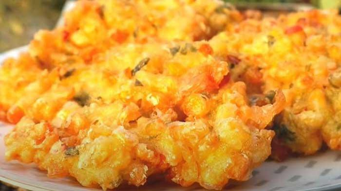

Rendang
Home

Ingredients
- 2 sweet corn kernels, kernels removed
- 100 grams of wheat flour
- 50 grams of rice flour (for extra crispiness)
- 2 eggs
- 3 talks of spring onions, finely sliced
- 3 cloves of garlic, mashed
- 3 shallots, mashed1 red chili, thinly sliced (optional)
- 1 teaspoon shallots
- 1 teaspoon granulated sugar
- 1 teaspoon salt
- 1/2 teaspoon ground pepper
- 150 ml water
- Oil for frying
Steps
- First, remove the kernels from the cob. You can use a knife to cut the corn vertically to remove the kernals from the cob. Then, set aside
- In a large bowl, combine the wheat flour, rice flour, salt, sugar, and ground pepper. Mix well using a spatula or spoon
- Gradually add water to the flour mixture while stirring until the batter is thick and lump-free. Make sure the batter is not too runny so the corn fritters won't become soggy when fried
- Once the flour mixture is thoroughly combines, add the corn kernels, sliced spring onions, garlic, shallots, and red chilies (if using). Stir again until all ingredients are evenly combined
- Crack the egg into the batter. Stir well until the batter becomes smoother and all ingredients are thoroughly combined
- Heat oil in a skillet over medium heat. Make sure you use enough oil so the fritters can be submerged and cook evenly. Too little oil can result in corn fritters being less crispy and undercooked
- Once the oil is hot, scoop a spoonful of the fritter batter into the hot oil. Fry until the fritters are golden brown and cooked through on both sides. Avoid frying too many at once to maintain a stable oil temperature
- Remove the cooked fritters and drain on kitchen paper towels to absorb excess oil